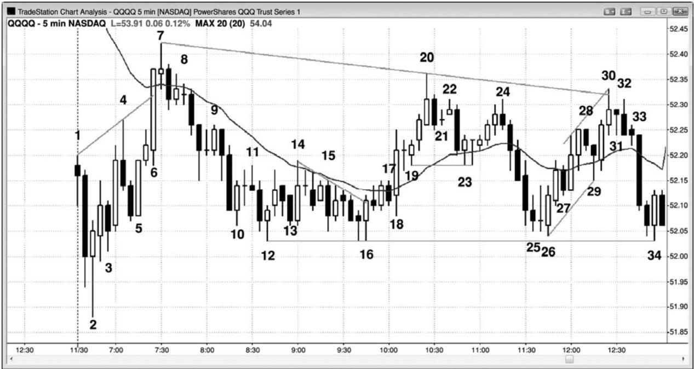

第21章 交易区间交易范例¶
第 21 章 交易区间交易范例
当市场处于交易区间内时，交易者们应该以“低买、高卖”这句格言为指导。另外，考虑做刮头皮，而不是波段交易。准备好设定较小的利润目标，而不是持有头寸等待突破。向顶部的反弹通常看起来很可能会成为成功的突破，然后形成一轮多头趋势，但 80%的情况下会失败。同样地，向区间底部的强势下跌，80%也会失败，不能形成空头趋势。尽量使你的潜在回报至少与风险一样大，从而使你的胜率不必达到 70%或更高。由于市场是双向的，所以在你入场后、出场前常常会出现回撤，如果你不想持有头寸经历回撤，那么就不要交易。如果市场已经在交易区间内上涨了 5 到 10 棒，那么通常最好是只准备做空，并且对多头头寸获利了结。如果市场已经下跌一段时间，那么就要准备买进或了结空头头寸。在交易区间中部，很少会用止损单入场，但有时使用限价单入场是合理的。
在最佳交易架构中，初学者应该集中选择使用止损单的入场，于是当他们入场时，市场正在向他们的方向运动。
在区间底部的高点 2 买进。它们常常是第二次尝试令市场从底部向上反转，比如双重底形态。
在区间顶部的低点 2 卖出。它们常常是第二次尝试令市场从顶部向下反转，比如双重顶形态。
在区间底部买进，特别是在向上突破空头趋势线后的二次入场。
在区间顶部做空，特别是在向下突破多头趋势线后的二次入场。
在底部附近的楔形多头旗形买进。
在顶部附近地楔形空头旗形卖出。
市场跌破区间底部的波段低点后，在多头反转棒或类似最终旗形的反转形态（在第三本书中讨论）买进。
市场向上突破区间顶部的波段高点后，在空头反转棒或类似最终旗形的反转形态（在第三本书中讨论）卖出。
在区间底部附近，在向上突破后的突破回撤买进（举例说明，如果市场开始上涨然后回撤，那么就准备在前一棒的高点上方买进。）
在区间顶部附近，在向下突破后的突破回撤卖出（举例说明，如果市场开始下跌然后回撤，那么就准备在前一棒的低点下方卖出。）
利用限价单入场需要更熟练的读图技能，因为交易者正在进入的市场的运动方向，与他的交易方向相反。有些交易者交易较小的头寸，并且在市场继续向不利方向运动时逐步加仓；但是只有成功的、老练的交易者才应尝试这种做法。以下是一些限价单或市价单交易架构的例子：
在区间底部的空头尖峰中，以市价单或限价单在前一波段低点或其下方买进（在尖峰中买进需要较宽的止损，而且尖峰形成的速度很快，所以这一组合对很多交易者来说不易掌控）。
在区间顶部的多头尖峰中，以市价单或限价单在前一波段高点或其上方买进（在尖峰中买进需要较宽的止损，而且尖峰形成的速度很快，所以这一组合对很多交易者来说不易掌控）。
在区间底部的大型空头趋势棒的收盘价或其低点下方买进，因为那常常是一波耗尽型高潮，是交易区间中下跌的终点。
在区间顶部的大型多头趋势棒的收盘价或其高点上方卖出，因为那常常是一波耗尽型高潮，是交易区间中上涨的终点。
在交易区间底部，使用限价单在低点 1 或低点 2 弱信号棒（的低点）或其下方买进。
在交易区间顶部，使用限价单在高点 1 或高点 2 弱信号棒（的高点）或其上方做空。
在强多头波段起点的空头收盘买进。
在强空头波段起点的多头收盘卖出。

图21.1所示是QQQ的一个交易区间日，在这种交易日交易有很多种方法，但是总的来说，交易者应该在极点做反向交易，而且只做刮头皮。虽然有很多信号，但是交易者不应担心自己无法捕捉全部或大部分信号。交易者所需要的就是每天选择几个好的架构，然后开始获利。
我有一位朋友，已经做了几十年交易，在这样的交易日里，他做得非常好。我曾亲眼看他交易电子迷你，在这样的交易日，他一天大约做15笔可获利的单点刮头皮交易，全部都是反向交易。举例说明，在棒 10 到棒 18 之间，他会努力使用限价单在每个架构的下方买进，比如在市场跌破棒 10 时，在棒 13 跌破它前面的空头棒时，以及在棒 15 跌破它的前一棒时，而且当市场跌破棒 13 时，他还会加仓。他还会在市场暂时跌破棒 15 时买进更多，如果市场跌破棒 12，他也会努力买进。有一点要记住，他是一位颇有经验的交易者，有能力捕捉到胜率为 70\~80%的交易。很少有交易者拥有那种能力，所以初学者不应冒着两点的风险去刮取 1点的利润。最低限度，在等距运动的成功率至少为 60%时，他才应该做交易区间交易。由于在这张图表上他们不得不冒大约两点的风险，所以仅当持有头寸预期至少获得两点利润时，他们才应交易。也就是说他们应该准备在区间底部附近买进，在顶部附近做空。
如果交易者们在区间底部买进，那么他们就应该准备在区间顶部获利了结。他们还应在区间顶部附近新建空头头寸，并且在市场向区间底部运动时准备把那些头寸获利了结。对于大部分交易者来说，反转操作太难了，作为替代，他们应该在利润目标出场，然后寻找反向交易。举例说明，如果他们在棒 16 向上超越前一棒高点时买进，并且触发双重底多头旗形入场，那么他们可能会使用限价单离场，在截止棒 20 的上涨运动中获得 10、15 或 20 美分的利润。离场之后，他们可以寻找做空架构，比如在棒 22 更低高点下方或棒 24 更低高点下方。后一个架构更好一些，因为它拥有一条强空头反转棒，而且它与棒 22 构成一个双重顶空头旗形。
那么交易者们何时得出结论，这是一个交易区间日呢？每个人得出结论的时间都不一样，但市场常常会提前给出一些线索，那种线索越来越多，交易者们也就变得越来越自信。从第一棒开始，市场便显示出一些双向交易的征兆，大约在随后的每一棒，其他征兆不断累积。当天的第一棒是一个十字星，那增加了交易区间日形成的几率。市场在棒 3 向上反转，但是在截止棒 4 的上涨运动中只有很弱的坚持到底。头三棒拥有较长的下尾线，而且棒 2 与前一棒差不多有一半的重叠。在做多入场后，市场立即在棒 3 向下反转，而下一棒又向上反转。市场在棒 4 再次向下反转，在棒 5 又向上反转，在均线处，又在棒 7 向下反转。每当市场在
棒 6 是一条强多头趋势棒，但没有坚持到底。它在均线处停止上涨，下一棒是一个十字星，而不是一条收盘远高于均线的强多头趋势棒。下一棒是一条空头趋势棒，后面两棒也未能收盘于均线上方。虽然出现一波很强的反弹，但多头未能控制市场，所以市场仍然是双向的。
棒 2 是一个双棒多头尖峰的起点，然后是一条三推多头通道，到棒 7 结束。由于棒 2 是一个下跌缺口和抛盘之后的一条强多头反转棒，所以它是一个很好的开盘反转，可能成为当日低点。当天本来可能成为一个强多头趋势日，但市场却代之以横向运动。不过它一直没有跌破那条入场棒的低点。
棒 2 是一个双棒多头尖峰的第一棒，棒 4 和棒 7 是尖峰之后的楔形通道内的第二次和第三次上推。尖峰和通道形态中的通道是交易区间的第一条腿，所以大部分交易者此时认为市场至少在接下来的 10\~20 棒，或者当天剩余时间将处于交易区间内。他们准备在测试棒 3 或棒 5 低点的两条腿下跌买进，因为那些棒线形成了多头通道的底部。即使他们认为当天可能成为一个趋势日，他们也会认为当时市场是处于交易区间，所以只做刮头皮。他们的刮头皮操作强化了交易区间，因为当很多交易者在高点附近卖出，在低点附近买进时，市场很难突破进入趋势。
P196
交易者们可能会在棒 2 上方买进，预期市场至少会测试均线。有些交易者可能会在当日新高处的空头反转棒棒 4 做空，但大多数人会认为来自反转棒棒 2、双棒多头尖峰、以及棒 4之前的多头棒的买进足以令市场测试均线，尽管出现一个回撤。因此，很多交易者会设定限价单在棒 4 低点及其下方买进，而且他们可能会把保护性止损设在棒 2 后面的多头入场棒下方，甚至设在信号棒棒 2 低点下方。有些人会使用资金止损，比如使用当天到现在为止的平均棒线高度，大约 10 至 15 美分。有些交易者可能认为空头可能会从棒 4 向下做一笔 10 美分的刮头皮交易。那将需要市场跌至棒 4 以下 12 美分，于是他们可能使用 13 个跳动的止损。他们可能认为那笔空头交易是一笔刮头皮交易，所以空头会使用限价单在低于棒4低点11美分处买进他们的头寸，所以他们可能在棒4下方1个跳动处使用止损单入场的交易上刮到10美分的利润。
反应灵敏的交易者可能会设定止损单在棒 4 后面的那条空头入场棒上方做多，因为他们知道棒 4 信号棒足以诱使空头入场，那些空头将担心市场向均线反转。他们会把保护性止损设在入场棒上方，并且在市场到达均线前不准备再次做空。这使得在那条入场棒上方买进成为一笔很棒的多头刮头皮交易。
多头怀疑棒 5 后一棒可能不是一个可靠的做空架构，所以他们设定订单在它的低点、低点上方和下方买进，预期它成为一个失败的更低高点。只有那个低点上方 1 个跳动处的做多限价单得到执行，那就意味着多头非常积极。结果形成一条强多头趋势棒，一直穿过均线。这是一个强多头突破，但是交易者们想知道它为什么在均线处停止，而不是继续上涨。他们需要马上看到坚持到底，否则他们将怀疑那只是对开盘高点的一次失败的突破。或许棒 6 只是由于强势交易者临时退出而形成的买进真空引起的。如果他们认为市场即将测试均线，那么对于他们来说，在略低于均线处卖出就不合逻辑。强势多头和空头缺席，允许市场快速上涨。不过，一旦市场到达他们认为很可能不再上涨的区域，他们就突然冒出来积极卖出，压倒弱势多头。强势多头抛出自己的多头头寸而获利，强势空头卖出以建立新的空头头寸。认为当天很可能成为交易区间日的空头，可能会在棒 6 超越均线时使用限价单卖出，则其他人则会在它的收盘做空。有人可能愿意在更高价位加仓，特别是在下一棒出现疲弱的坚持到底之后。
当市场下跌时，大部分交易者清楚地看到多空双方的力量都很强，在双方争夺控制权时，市场很可能维持其双向性。也就是说很可能在交易区间内运动。当市场靠近顶部时，多头担心太贵而不再买进，空头则认为它具有很高的做空价值。这使得市场下跌。在顶部附近急切做空的空头，对于在底部附近做空不感兴趣，于是卖压枯竭。愿意在中部买进的多头把区间底部看作一个价值更高的位置；他们在那里积极买进，拉升市场回涨。
空头愿意在测试均线的棒 7 下方做空。如果多头很强，那么应该在均线上方形成一波强运动，而不是停滞不前。棒 7 使得棒 6 更像是耗尽，而不是强突破。另有一些空头在棒 8 ii（内包－内包）形态下方或棒 7 后面的空头棒下方做空。ii 形态之后的双棒空头尖峰相当强劲，但是两棒都有明显的下尾线，表明存在一些买压。此时，市场已经拥有一个从当日低点到棒7的强上涨尖峰和一个强下跌尖峰。交易者们正预期形成交易区间。
棒 9 是一个做多陷阱。大部分交易者把它前面的那条十字星内包棒看作空头尖峰之后的一个糟糕的买进信号，很多人设定限价单在那条十字星棒的高点做空。他们预期市场向棒 5低点附近的多头通道底部区域回撤。这也是在棒 2 信号棒高点区域，那也是一个磁力位，预期形成突破测试。多头希望在棒 3 或棒 5 低点区域形成一个双重底多头旗形，但同时也希望市场不会跌破原始入场棒低点（棒2后一棒低点）。否则，他们可能会放弃仍有可能成为多头趋势日的看法。
棒 10 是棒 7 高点之后的第三次下推，而且它是一条强多头趋势棒。多头担心下跌运动是在一条紧凑的通道内，第一次突破尝试可能失败。很多多头在买进前会等待突破回撤。有些买进的多头买了一个较小的头寸，以防市场跌至棒 3 低点，他们计划在第二个上涨信号买进更多，那个信号出现在棒 12。另有一些人认为很多交易者会在他们的多头头寸上使用 10 美分的止损，于是他们在下方 10 美分处设定限价单买进，那里刚好是弱势多头离场的位置。然后，他们会把整个头寸的保护性止损设在再降低10美分处，低于棒2后面的入场棒，甚至低于棒 2。愿意冒着跌至当日新低的风险的交易者，可能会交易更小报头寸，在首次入场点下方约 10 美分处，他们会二次加仓做多
P197
棒 12 多头反转棒与棒 3 或棒 5 低点形成一个近似的双重底，而且它是一个二次信号。这使它成为区间底部的一个高点 2。它是当日高点之后的第四次下推，有些交易者把它看作一个高点 4 多头旗形。对于很多交易者来说，棒 8 后面的空头尖峰是第一次下推，棒 12 是第三次下推。很多尖峰和通道形态像这样在第三次下推后结束，然后形成一波两条腿反弹，测试空头通道的顶部，这里空头通道的顶部是在棒 9 高点附近。有些交易者认为，截止棒 12 的下跌运动处于一条非常紧凑的通道内，所以无法买进，他们会等待一个清晰的二次信号。直到在棒 12 低点附近形成一条相对较小的棒线，很多人才会买进。这些交易者可能会在棒 16 双重底多头旗形买进。棒 14 强势向上突破空头通道，然后市场形成一波两条腿回撤。棒 16 也是一个楔形多头旗形的入场棒，其中棒 10 是第一次下推，棒 12 是第二次下推。还有人认为棒 13 是第一次下推，棒 15 是第二次下推。它还是一个下降三角形，棒 16 是对那个三角形的向上突破。由于它是一条很强的突破棒，所以交易者们正准备在突破回撤买进。他们会设定限价单在前一棒低点或低点下方买进，那些订单将在棒18被执行。另有交易者会在空头棒棒17的收盘买进，因为他们认为更可能形成突破回撤和一个更高低点，而不是突破失败，跌破
交易区间底部棒16。
交易者们使用相同的逻辑在棒 12后一棒下方买进，认为它是一个糟糕的低点 2做空架构，原因是它出现在交易区间的底部，而且它出现在第二次向上反转之后，两次反转都拥有较强的买压（不错的多头反转棒）。有人会在棒12之后的空头棒的收盘或者在棒13的空头收盘买进，预期市场不会跌破棒 12 低点。有人会在棒 13 上方买进，认为那里有被套的空头，当那些空头回补时，市场会快速上涨。
由于这是在一条紧凑的交易区间内，所以多空双方都认为存在价值。双方都在那里舒适地新建交易。在一个多空双方都认为存在价值的确定区域内，突破通常不会走得太远，市场很快便会把它拉回区间之内。它拥有很强的磁性拉力，空头将在上方更积极地做空，多头将在下方更积极地买进。
棒 18 是一条大型多头趋势棒，向上突破了之前持续了一小时左右的交易区间。不过，由于整个交易日是在一个较大的交易区间内，所以市场现在处于那个较大区间的中部，对于买进，交易者们犹豫不决。结果产生了 ii 形态。有些交易者在棒 12 收盘和向上突破棒 12 时买进。有些交易者在那个ii形态中和棒19 多头内包棒上方买进。交易者们试图在棒18之后的那条内包棒的低点及其下方使用限价单买进，但订单没有得到执行。这使得他们更愿意在棒19被向上突破时买进。他们看到自己设在下方的订单没有被执行，认为那是多头表现出紧迫感的一种征兆。
棒 18 突破尖峰之后是一个截止棒 20 的小型抛物线高潮，然后形成一个双棒向下反转架构。入场位于双棒形态中较低一棒的下方，直到两棒后才触发。认为当天是一个交易区间日的交易者们正准备在靠近当日高点的强反弹做空。棒 21 是一个小十字星，所以是一个弱高点1 买进架构，尤其是它形成一个买进高潮之后。空头在它的高点上方做空。有些交易者在棒22 低点下方做空，多头正在那里抛售自己的多头头寸。那些多头已经在交易区间的顶部买进，希望形成多头突破，当多头突破没有形成时，他们迅速离场。在他们离场时，触发了棒20高点处的双棒反转做空架构。
市场向均线下跌，以一条多头反转棒形成一个高点 2 买进信号。这是多头趋势中一个非常可靠的架构，但大部分交易者仍然认为当天是一个交易区间日。很多人会在棒 23 上方买进，希望形成一轮多头趋势，但是他们已经做好计划，如果没有强多头突破，那么就迅速离场。他们对棒 23 后面的十字星内包棒感到担忧，因为他们希望看到的是紧迫感，而不是犹豫不决。
他们退出自己的多头头寸，空头在棒 24 空头反转棒下方做空，棒 24 与棒 22 形成一个双重顶空头旗形。有人认为它与棒 22 形成一个低点 2 做空架构，有人把它看作一个楔形顶，其中棒 20 是第一次上推，棒 22 是第二次上推。
市场形成一个强空头尖峰到达交易区间底部，但棒 25 拥有较小的空头实体，表明存在犹豫。多头未能制造一个突破，结果只是一个交易区间。该交易区间未能挣脱棒 10 到棒 16 紧凑交易区间的磁力拉力。如果这是一轮强空头趋势，那么市场一旦回到当日早些时候形成的紧凑交易区间内，它就不会犹豫。相反地，它会以一系列强空头趋势棒跌破那个交易区间。这告诉交易者们空头不强，这可能只是一个卖出真空。强势交易者们可能会闪在一旁，预期市场测试区间底部。一旦市场到达底部，他们就开始持续地积极买进，多头新建多头头寸，空头将自己的空头头寸获利了结。他们下决心使市场保持在交易区间低点之上。棒 26 是交易区间底部的一个高点 2，是一条强多头反转棒。棒 25 是高点 1 架构。棒 25 和 26 区域与棒 12到16区域形成一个双重底多头旗形。这第二个底部也是棒10至棒17紧凑交易区间突破后的回撤。
棒 26 在下一棒拥有很好的坚持到底，交易者们预期这次向下测试失败。有人在棒 27 空头趋势棒的收盘买进。有人在棒27低点及其下方设定限价单买进。买进非常积极，市场甚至不能到达棒 27 低点。机警的交易者们看到这一点，快速设定止损单在棒 27 高点上方买进。结果形成一个由两条多头趋势棒构成的突破。
P198
棒 28 是一条空头内包棒，但是从棒 26 开始的上涨运动处于一条紧凑通道内，所以第一次下跌尝试应该失败。多头在棒 28 低点及其下方设定限价单买进。截止棒 26 的下跌运动是一波大型的两条腿运动，其中棒 23 是第一条腿的终点。这是一个大型多头旗形，截止棒 28的上涨运动是一个突破。棒29是那个突破之后的回撤，也是对从棒26到棒28的微型通道的底部的失败突破。
棒 30 是一个决斗线形态，当市场超越两条线时，多头获利了结，在顶部制造一条尾线。另有一些多头在疲弱的收盘离场，还有一些多头在棒 31 双棒反转顶的下方离场。
棒 31 是一个十字星，所以是一条弱高点 1 信号棒。另外，从棒 26 到棒 30 的尖峰不强，所以不能在第二个高点 1 买进（棒 29 是第一个），而且当天是一个交易区间日，不是一个清晰的多头趋势日。空头把它看作交易区间顶部的一个糟糕的高点 1，他们在棒 31 高点做空。
另有空头在棒32空头反转棒下方做空。有人把棒30和31看作一个双棒反转形态，有人忽略棒 31，把棒 30 和 32 看作一个双棒反转形态。它也是一个微型双重顶。市场在棒 30 上涨，在棒 31 下跌，然后在棒 32 再次上涨，然后在那一棒收盘前下跌。市场还在当天形成三次上推，其中棒 7 和 20 是头两次上推，所以当天是一个很大的三角形形态。棒 32 后面的入场棒向下突破从棒26和29开始的多头趋势线（未画出），市场在趋势线下方的第二棒快速下
跌进入收盘。
在棒 10 和 16 之间形成很多多头三角形。由于该形态形成于截止棒 7 的多头尖峰的底部，所以很多交易者认为可能形成一条上升通道，最低测试棒 7 高点。在这个交易区间内还有几个多头尖峰，它们既产生买进，也表明市场正努力形成一个更高低点。由于没有哪个三角形是非常清晰的，所以并非所有交易者都同意某个三角形强到足以使市场成为总在场内多头。棒 10、12 和 16 是三次下推，形成一个下降三角形。棒 13、15 和 16 也是三次下推，形成一个三角形。有些交易者认为它是一个楔形多头旗形。另一个楔形多头旗形由棒 14 后面第二棒（空头棒）、棒 15 和棒 16 构成。